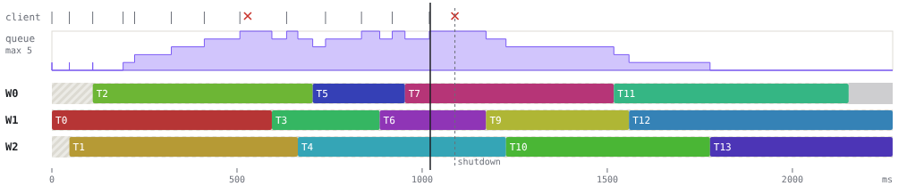
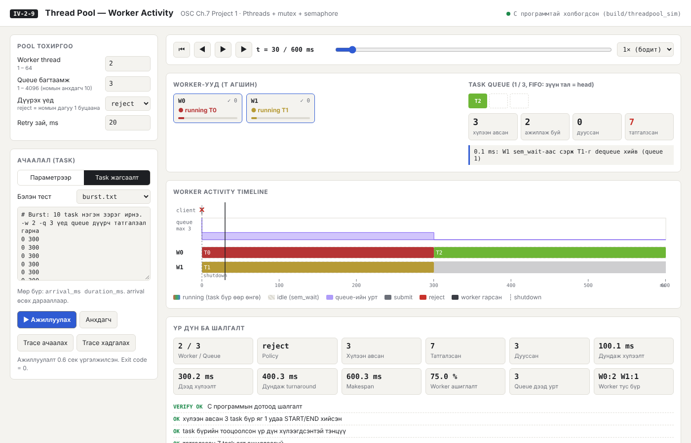

F.CSM302 ҮЙЛДЛИЙН СИСТЕМ · БИЕ ДААЛТ 1 · MANUAL
IV-2-9
Thread Pool — Worker Activity
Хэрэглэгчийн ба operational заавар
| Төсөл | Designing a Thread Pool (OSC Ch.7, Programming Project 1, POSIX) |
| Repository | https://github.com//IV-2-9-threadpool |
| Хувилбар | v1.0 |
Түргэн эхлэл (3 команд)
git clone <REPO_URL> && cd IV-2-9-threadpool
make && make test # → "Нийт: 29 PASS, 0 FAIL"
make ui # → браузерт http://localhost:8000
8.1 Хэрэглэгчийн заавар
1. Программын зорилго
Pthreads, mutex, semaphore-оор хэрэгжүүлсэн thread pool-ийг өөр өөр тохиргоогоор ажиллуулж, worker бүрийн idle → running → completed төлөв, task queue-ийн дүүргэлт, татгалзлыг хугацааны тэнхлэг дээр харуулна. UI дээрх бүх дүрслэл C программын бодит ажиллагааны бүртгэлээс (trace) зурагдана.
2. Дэмжих орчин
| Зүйл | Шаардлага |
|---|
| OS | Linux (Ubuntu 20.04+, Debian, Fedora), Windows дээр WSL2. macOS-д build хийх боломжтой (Known issues-ийг үз) |
| Compiler | gcc ≥ 9 эсвэл clang ≥ 10 (C11, pthread) |
| Build | GNU make |
| UI | Python ≥ 3.8 (нэмэлт сан шаардахгүй) + орчин үеийн браузер (Chrome, Firefox, Edge, Safari) |
3. Суулгах эсвэл нээх алхам
- Repository-г татах:
git clone <REPO_URL> (эсвэл ZIP татаж задлах).
- Хавтас руу орох:
cd IV-2-9-threadpool.
- Хөрвүүлэх:
make → build/threadpool_sim, build/client үүснэ.
- UI-г эхлүүлэх:
make ui (эсвэл python3 tools/server.py --port 8000).
- Браузерт
http://localhost:8000 нээнэ. Баруун дээд буланд ногоон цэг ба “C программтай холбогдсон” гэж гарвал бэлэн.
Сервергүй үзэх: ui/index.html-ийг шууд нээгээд “Trace ачаалах” → examples/sample_trace.json. Энэ горимд “Ажиллуулах” идэвхгүй, хадгалсан trace-ийг л үзнэ.
4. Оролт ба тохиргоо
4.1 UI-ийн талбарууд
| Талбар | Утга | Тайлбар |
|---|
| Worker thread | 1–64 | Pool дахь worker thread-ийн тоо |
| Queue багтаамж | 1–4096 | Тойрог массив queue-ийн хэмжээ (номын анхдагч 10) |
| Дүүрэх үед | reject / retry | reject: номын дагуу pool_submit 1 буцааж task хаягдана. retry: client “Retry зай” ms хүлээгээд дахин оролдоно |
| Retry зай, ms | 1–10000 | Зөвхөн retry горимд |
| Параметрээр → Task-ийн тоо | 1–2000 | Үүсгэх task-ийн тоо |
| Хугацаа, ms (min–max) | 1–60000 | Task бүрийн ажиллах хугацаа энэ мужаас санамсаргүй |
| Ирэх зай, ms (min–max) | 0–60000 | Дараалсан хоёр task-ийн хоорондох зай; 0 = бүгд зэрэг |
| Seed | ≥ 0 | Ижил seed → ижил ачаалал (дахин давтах боломжтой) |
| Task жагсаалт | мөр бүр arrival_ms duration_ms | Тодорхой сценари. #-ээс хойш тайлбар. arrival өсөх дарааллаар. “Бэлэн тест”-ээс сонгож засаж болно |
4.2 Командын мөрийн сонголтууд
Хэрэглээ: ./build/threadpool_sim [сонголтууд]
-w N worker thread-ийн тоо (1..64, анхдагч 3)
-q N queue-ийн багтаамж (1..4096, анхдагч 10)
-n N task-ийн тоо (1..10000, анхдагч 12)
-d A[-B] task-ийн хугацаа ms (1..60000, анхдагч 200-800)
-a A[-B] дараалсан task-уудын ирэх зай ms (0..60000, анхдагч 50-150)
-f FILE task-ийн файл: мөр бүр 'arrival_ms duration_ms' (-n -d -a-г орлоно)
-p POLICY queue дүүрэх үед: reject (номын дагуу 1 буцааж хаяна) | retry
-r MS retry хоорондын зай ms (1..10000, анхдагч 20)
-s SEED санамсаргүй тооны seed (анхдагч 42)
-o FILE JSON trace бичих файл ('-' бол stdout)
-v task бүрийг stderr-д хэвлэх
-h энэ тусламж
Жишээ: ./build/threadpool_sim -w 3 -q 5 -n 20 -d 100-400 -a 20-60 -o trace.json
5. Ажиллуулах, зогсоох, reset хийх
| Үйлдэл | UI | Товчлуур |
|---|
| Ажиллуулах | ▶ Ажиллуулах — C программ бодитоор ажиллана (task-уудын нийт хугацаа шиг удна), дараа нь автоматаар тоглуулна | |
| Тоглуулах / түр зогсоох | ▶ / ⏸ | Space |
| Алхамчлах | ◀︎ өмнөх, ▶︎ дараагийн үйл явдал | ← / → |
| Хугацаанд очих | Гулсуур, timeline дээр дарах/чирэх, бүртгэлийн мөр дээр дарах | |
| Хурд | 0.25× … 10× (1× = бодит хугацаа) | |
| Reset | ⏮ — эхний агшинд буцна; “Анхдагч” — тохиргоог анхны утгад | |
| Хадгалах / ачаалах | Trace хадгалах (JSON татна) / Trace ачаалах | |
| Серверийг зогсоох | Терминалд Ctrl+C | |
6. Дүрслэлийн тэмдэг, өнгө, төлөв

Worker activity timeline
| Тэмдэг | Утга |
|---|
Өнгөт bar Tk (worker lane) | Worker тухайн task-ийг running (execute) хийж буй хугацаа. Task бүр өөрийн өнгөтэй, queue-ийн slot-д ч мөн тэр өнгөөр харагдана |
| Судалтай саарал | idle — worker sem_wait дээр ажил хүлээж байна |
| Хар/бараан бүс | Worker гарсан (exited) — shutdown-ы дараа |
| Ягаан step chart | Queue-ийн урт (0 … багтаамж) |
| client мөр: саарал | | pool_submit амжилттай (0) |
| client мөр: улаан ✕ | Queue дүүрсэн — pool_submit 1 буцаасан (REJECT) |
| Тасархай босоо зураас | pool_shutdown() дуудагдсан агшин |
| Хар босоо шугам | Одоогийн агшин (playhead) |
| Worker карт: ● running Tk / ○ idle / ■ exited, ✓ n | t агшин дахь төлөв ба тухайн worker-ийн дуусгасан task-ийн тоо (completed) |
| VERIFY OK / FAIL | C программын 8 дотоод шалгалтын дүн |
7. Жишээ
Жишээ 1 — Queue дүүрэх (reject)
- “Task жагсаалт” → Бэлэн тест:
burst.txt. - Worker 2, Queue 3, Дүүрэх үед: reject → ▶ Ажиллуулах.
- Хүлээгдэх: 3–5 task хүлээн авагдаж, үлдсэн нь client мөрөнд улаан ✕ болно; “татгалзсан” ≥ 5; makespan ≈ 600 ms.

Жишээ 1-ийн үр дүн
Жишээ 2 — Retry горим
- Жишээ 1-ийн тохиргоонд “Дүүрэх үед: retry” болгоод ажиллуулна.
- Хүлээгдэх: 10/10 хүлээн авагдана, ✕ олон (дахин оролдлого), makespan ≈ 1500 ms.
Жишээ 3 — Worker-ийн тооны нөлөө
- Параметрээр: Task 40, Хугацаа 100–300, Ирэх зай 0–0, Queue 64, Seed 1.
- Worker 1, 2, 4, 8-аар ээлжлэн ажиллуулж “Makespan” ба “Worker ашиглалт”-ыг харьцуулна.
- Хүлээгдэх: makespan ≈ 8.4 с → 4.2 с → 2.2 с → 1.1 с.
Жишээ 4 — FIFO-г алхамчилж шалгах
- Бэлэн тест
fifo.txt, Worker 1 → Ажиллуулах → ⏮. - → товчоор алхамчилна. Хүлээгдэх: START-ууд T0, T1, T2… дарааллаар.
8. Түгээмэл алдаа ба шийдэл
| Алдаа / шинж тэмдэг | Шалтгаан | Шийдэл |
|---|
| “offline — зөвхөн trace файл үзэх горим” | index.html-ийг файлаар нээсэн эсвэл сервер ажиллаагүй | make ui ажиллуулаад http://localhost:8000 нээнэ |
| “build/threadpool_sim алга” | Хөрвүүлээгүй | make |
Address already in use | 8000 порт завгүй | python3 tools/server.py --port 8080 |
| “Алдаа: -w буруу ('0')…” | Утга хязгаараас гадуур | Мессежид заасан мужид оруулна |
| “<task жагсаалт>:2 — duration_ms буруу” | Жагсаалтын 2-р мөрөнд тоо биш утга | Мөр бүр яг 2 бүхэл тоо |
| “arrival_ms өсөхгүй дарааллаар” | Ирэх хугацаа эрэмбэгүй | arrival-аар эрэмбэлнэ |
| “Тооцоолсон хугацаа ~N сек” | UI-д нэг ажиллуулалт ~60 с-ээр хязгаарлагдсан | Task/хугацааг багасгах, worker нэмэх эсвэл CLI ашиглах |
| Ижил тохиргоо өөр timeline гаргах | OS scheduler-ийн жам ёсны nondeterminism | Алдаа биш. “Trace хадгалах”-аар тодорхой ажиллуулалтыг хадгална |
8.2 Operational заавар
1. Repository clone хийх
git clone <REPO_URL>
cd IV-2-9-threadpool
git checkout v1.0 # 9-р долоо хоногт нийтэлсэн хувилбар
2. OS, compiler/runtime, version
| Зүйл | Туршсан хувилбар | Хамгийн бага |
|---|
| OS | Ubuntu 24.04.5 LTS, kernel 6.18.44-fc-v180 | |
| CPU | Intel(R) Xeon(R) Processor @ 2.30GHz, 2 core, x86_64 | x86_64 / arm64 |
| Compiler | gcc (Ubuntu 13.3.0-6ubuntu2~24.04.1) 13.3.0 | gcc 9 / clang 10 |
| libc / pthread | ldd (Ubuntu GLIBC 2.39-0ubuntu8.9) 2.39 | glibc 2.31 |
| Python (UI сервер) | Python 3.13.18 | Python 3.8 |
| Браузер (UI, screenshot) | Chromium 153 (headless, playwright) | Орчин үеийн браузер |
3. Dependency суулгах
# Ubuntu / Debian / WSL2
sudo apt update && sudo apt install -y build-essential python3
# Fedora
sudo dnf install -y gcc make python3
# macOS
xcode-select --install
Python-д нэмэлт pip сан, UI-д CDN шаардахгүй.
4. Build ба Run команд
| Команд | Үйлдэл |
|---|
make | build/threadpool_sim, build/client хөрвүүлнэ |
make run | 3 worker, queue 5, 15 task; trace → build/trace.json |
make client | Номын client.c жишээ |
make test | Бүх тест (29) |
make tsan | ThreadSanitizer-тэй build + ажиллуулалт |
make ui | UI сервер, http://localhost:8000 |
sh tests/experiments.sh | Тайлангийн туршилтын хүснэгт → docs/results/*.csv |
python3 tools/build_docs.py | Report.pdf, Manual.pdf-ийг дахин үүсгэх (playwright шаардлагатай) |
make clean | build/ устгана |
Exit code: 0 — амжилттай, 2 — буруу оролт, 3 — ажиллах үеийн алдаа (санах ой, thread үүсгэх), 4 — дотоод шалгалт унасан.
5. Үндсэн тестийн өгөгдөл
| Файл / команд | Агуулга | Хүлээгдсэн үр дүн |
|---|
./build/client | Номын жишээ, 5 хос тоо | result = 15, 3, 300, 0, 42 (дараалал өөр байж болно) |
-f tests/basic.txt | 10 task, 0–350 ms-д ирнэ | accepted=10, rejected=0, max_running=3, VERIFY: OK |
-w 2 -q 3 -f tests/burst.txt | 10 × 300 ms, t=0 | accepted 3–5, rejected 5–7 |
... -p retry | Дээрхтэй ижил | accepted=10, makespan ≈ 1500 ms |
-w 1 -f tests/fifo.txt | 6 task | START дараалал = T0…T5 |
-w 3 -f tests/mixed_long_short.txt | 1 × 1500 ms + 7 × 100 ms | accepted=8, бусад worker богинуудыг гүйцэтгэнэ |
Trace-ийг бие даан шалгах: python3 tests/verify_trace.py build/trace.json --expect accepted=15.
6. Нэмэлт boundary/error test
./build/threadpool_sim -w 1 -q 1 -n 6 -d 100 -a 0 # queue 1: татгалзал гарна
./build/threadpool_sim -w 64 -q 64 -n 64 -d 50 -a 0 # дээд 64 worker
./build/threadpool_sim -w 8 -q 16 -n 500 -d 1-3 -a 0 -p retry -r 1 # 500 task stress
./build/threadpool_sim -w 0 # → Алдаа: -w буруу ('0') ..., exit 2
./build/threadpool_sim -d 500-100 # → MIN нь MAX-аас их байж болохгүй
./build/threadpool_sim -f tests/bad_unsorted.txt # → :2 — arrival_ms өсөхгүй дарааллаар
7. Хүлээгдсэн үр дүн
make test-ийн төгсгөлд Нийт: 29 PASS, 0 FAIL гарч, exit code 0 буцна. Ажиллуулалт бүрийн stderr-ийн төгсгөлд 8 мөр [ OK ] ба VERIFY: OK хэвлэгдэнэ. Хугацааны утгууд (wait, makespan) машин бүрт хэдэн ms-ээр зөрж болно. Хүлээн авсан/татгалзсан тоо, FIFO дараалал, зэрэгцээний дээд хэмжээ өөрчлөгдөхгүй (burst_reject-ийн 3–5 мужаас бусад).
Үндсэн тестүүд ==
[basic_default] ./build/threadpool_sim -f tests/basic.txt
accepted=10 rejected=0 max_running=3 max_queue=4 avg_wait=139.9ms util=91.7%
trace шалгалт: OK (48 үйл явдал)
PASS basic_default
[burst_reject] ./build/threadpool_sim -w 2 -q 3 -f tests/burst.txt
accepted=3 rejected=7 max_running=2 max_queue=3 avg_wait=100.0ms util=75.0%
trace шалгалт: OK (25 үйл явдал)
PASS burst_reject
[burst_retry] ./build/threadpool_sim -w 2 -q 3 -f tests/burst.txt -p retry -r 20
accepted=10 rejected=0 max_running=2 max_queue=3 avg_wait=324.5ms util=100.0%
trace шалгалт: OK (91 үйл явдал)
PASS burst_retry
[fifo_one_worker] ./build/threadpool_sim -w 1 -f tests/fifo.txt
accepted=6 rejected=0 max_running=1 max_queue=5 avg_wait=164.4ms util=100.0%
trace шалгалт: OK (28 үйл явдал)
PASS fifo_one_worker
[long_short_mix] ./build/threadpool_sim -w 3 -f tests/mixed_long_short.txt
accepted=8 rejected=0 max_running=3 max_queue=5 avg_wait=90.5ms util=49.0%
trace шалгалт: OK (40 үйл явдал)
PASS long_short_mix
[random_seeded] ./build/threadpool_sim -w 4 -q 8 -n 20 -d 50-200 -a 10-40 -s 7
accepted=20 rejected=0 max_running=4 max_queue=5 avg_wait=66.7ms util=89.3%
trace шалгалт: OK (90 үйл явдал)
PASS random_seeded
== 3. Boundary тестүүд ==
[queue_cap_1] ./build/threadpool_sim -w 1 -q 1 -n 6 -d 100 -a 0
accepted=1 rejected=5 max_running=1 max_queue=1 avg_wait=0.0ms util=100.0%
trace шалгалт: OK (13 үйл явдал)
PASS queue_cap_1
[more_workers] ./build/thread
...
8. Known issues
- macOS: unnamed POSIX semaphore (
sem_init) дэмжигддэггүй тул dispatch_semaphore wrapper ашигладаг. Энэ замыг зөвхөн CI-д тохируулсан бөгөөд баг бүрэн туршаагүй.
- Windows (native): дэмжихгүй. WSL2 ашиглана.
- Nondeterminism: Worker-ийн хуваарилалт ба burst-ийн үеийн хүлээн авах тоо ажиллуулалт бүрт бага зэрэг өөр гарна (OS scheduler).
- UI хязгаар: Нэг ажиллуулалт ≤ 2000 task, ≤ ~60 с. Илүүг CLI-ээр ажиллуулж, trace-ийг ачаалж үзнэ (их task-тай trace зурахад браузер удааширч болно).
- Retry горим: Нэг client thread submit хийдэг тул retry хүлээлт дараагийн task-уудын ирэлтийг хойшлуулна.
- Маш богино task (< 1 ms): Trace-ийн mutex нэмэлт зардал үүсгэж, хэмжилтэд нөлөөлнө.
- Сервер: Зөвхөн
127.0.0.1-д сонсоно (аюулгүй байдлын үүднээс). Өөр машинаас хандахад --host 0.0.0.0.